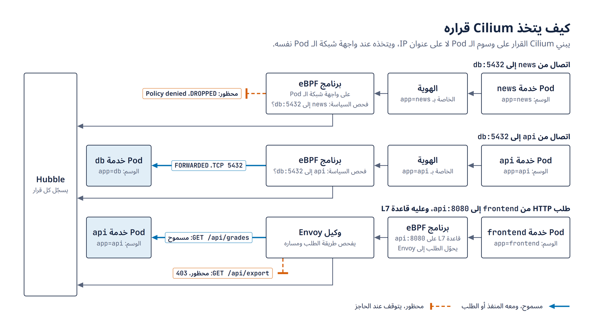
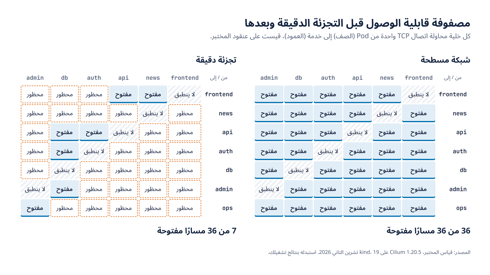
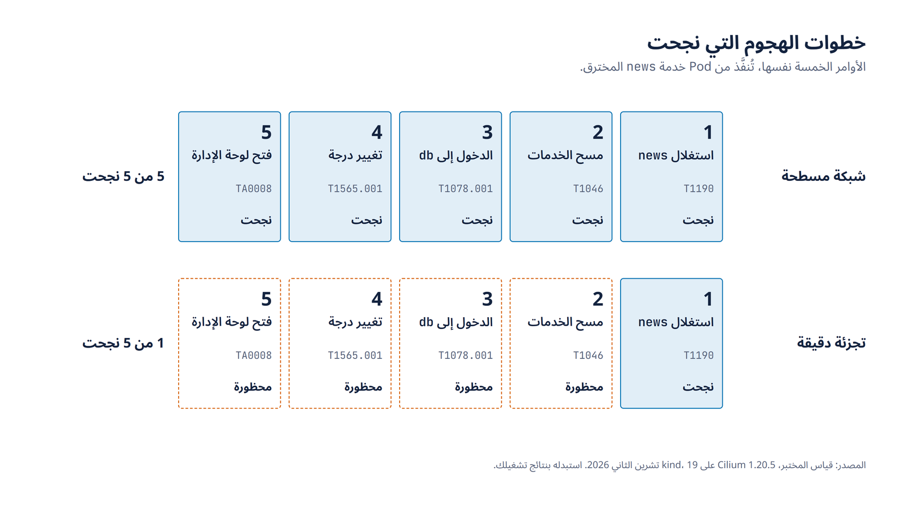

الفصل 10. تطبيق التجزئة الدقيقة للشبكة
نكتب ملف الأساس، أي الرفض الافتراضي (default deny)، بأيدينا، ونطبّقه وحده، ونراقبه وهو يغلق كل مسار، ومنها المسارات التي تحتاجها البوابة نفسها. ثم نضيف سياسة واحدة لكل حمل عمل (workload)، فتعيد هذه السياسات فتح الاتصالات الثمانية الموجودة في جدول التدفقات بالضبط. بعدها نجري الفحوص نفسها والهجوم نفسه اللذين أجريناهما في الفصل 8، وننهي الفصل باختبار تبديل يقلب النتائج ذهاباً وإياباً. في نهاية الفصل تبقى البوابة تجتاز الفحص بالنتيجة PORTAL: 6/6 OK وتعرض المصفوفة 7 مسارات مفتوحة من 36، ويتوقف الهجوم بعد الخطوة 1، ويجيب /api/export بالرد 403 Forbidden. نخصص لهذا الفصل ساعتين إلى ثلاث ساعات.
نُبقي لوحة التحكم تعمل في نافذة Ubuntu الخاصة بها كما في الفصل 8، ونكتب كل أمر آخر في نافذة Ubuntu الأولى، إلا إذا ذكر النص الذي فوق الكتلة مباشرة أن الأمر يُكتب في Windows PowerShell. ونضع بجانبنا ورقة أو ملفاً نصياً، ونسجّل فيه كل رقم يعطينا إياه هذا الفصل فور ظهوره. فنقطة التحقق في النهاية تطلب هذه الأرقام.
البدء من شبكة مسطحة، ودرجة عمر 58
لا تصح المقارنة بين ما قبل التجزئة الدقيقة للشبكة (micro-segmentation) وما بعدها إلا إذا بدأنا من الحالة نفسها التي بدأ منها الفصل 8: لا سياسات، ودرجة عمر عادت إلى 58.
kubectl -n campus get ciliumnetworkpolicies
kubectl -n campus exec deploy/db -- psql -U postgres -d campus -c "SELECT * FROM grades WHERE id = 3"يسرد الأمر الأول سياسات Cilium في مساحة الأسماء (namespace) campus ويقرأ الثاني درجة عمر في مادة Network Security من داخل Pod قاعدة البيانات db، كما في الفصل 8.
ما يجب أن نراه: لا سياسات، ودرجة 58.
يجب أن يكون السطر الأول No resources found in campus namespace. ويجب أن تظهر 58 في عمود الدرجة grade.
إذا ظهر شيء آخر
إذا كانت الدرجة 95 فخطوة الإرجاع في نهاية الفصل 8 لم تُنفَّذ. الحل تشغيل الأوامر الأربعة في خطوة «إرجاع درجة عمر» من ذلك الفصل، ثم إعادة هذا الفحص.
إذا سرد الأمر الأول سياسات، تُحذف بالأمر kubectl delete -f ~/microseg/k8s/policies/ الذي يحذف كل سياسة معرّفة في ذلك المجلد، ثم يُعاد هذا الفحص.
كتابة 1-baseline.yaml واختباره بتشغيل تجريبي
يحمل ملف الأساس السياسات الثلاث التي تسري على كل Pod في campus: منع كل شيء، والسماح باستعلامات الأسماء، والسماح بفحوص الجاهزية. نكتبه بأيدينا كي نقرأ كل سطر فيه ونحن نكتبه.
ننشئ الملف في VS Code، في نافذة المشروع التي فتحناها بالأمر code . في الفصل 2. في لوحة Explorer على اليسار ننقر بالزر الأيمن على المجلد k8s ونختار «New File...»، ونكتب الاسم policies/1-baseline.yaml ثم نضغط Enter. كتابة اسم فيه شرطة مائلة تجعل VS Code ينشئ المجلد policies والملف داخله دفعة واحدة، ويُفتح الملف الفارغ في تبويب جديد.
نكتب الملف أدناه. ننقل الإزاحة كما هي تماماً، بالمسافات، ولا نستخدم مفتاح Tab أبداً. فصيغة YAML، وهي الصيغة التي تُكتب بها ملفات Kubernetes، تحدد ما يتبع ماذا بمقدار إزاحة كل سطر. ومسافة واحدة خاطئة تغيّر المعنى. ويزيح VS Code أسطر YAML نيابة عنا أثناء الكتابة، فحين نضغط Enter بعد سطر ينتهي بالرمز : ينقل المؤشر إلى الداخل، وفي الأسطر الأخرى يحافظ على إزاحة السطر الذي فوقه. لذلك ننظر قبل كتابة كل سطر إلى الرقم Col في شريط الحالة أسفل اليمين، ونضيف المسافات أو نحذفها حتى يطابق الرقم ما في الدليل. Col 1 تعني لا مسافات أبداً، وCol 3 تعني مسافتين، وهكذا. مفاتيح الوسوم (labels) تحت matchLabels في السياسة الثانية محاطة بعلامتي تنصيص مزدوجتين لأن فيها نقطتين رأسيتين، فنكتب علامات التنصيص أيضاً. والأسطر التي تبدأ بالرمز # تعليقات يتجاهلها Kubernetes. نكتبها هي الأخرى إن سمح الوقت، فهي تشرح ما يفعله كل سطر.
# 1) default-deny: selects every pod in campus. The empty ingress rule and the empty
# egress rule switch both directions to "deny unless another policy allows it".
apiVersion: cilium.io/v2
kind: CiliumNetworkPolicy
metadata:
name: default-deny
namespace: campus
spec:
endpointSelector: {}
ingress:
- {}
egress:
- {}
---
# 2) allow-dns: every pod may ask kube-dns (in kube-system) on port 53, for any name.
apiVersion: cilium.io/v2
kind: CiliumNetworkPolicy
metadata:
name: allow-dns
namespace: campus
spec:
endpointSelector: {}
egress:
- toEndpoints:
- matchLabels:
"k8s:io.kubernetes.pod.namespace": kube-system
"k8s:k8s-app": kube-dns
toPorts:
- ports:
- port: "53"
protocol: ANY
rules:
dns:
- matchPattern: "*"
---
# 3) allow-kubelet-probes: readiness probes come from the node itself (entity "host").
# Cilium already allows this by default. Writing it down makes the rule visible
# and keeps probes working if that default is ever changed.
apiVersion: cilium.io/v2
kind: CiliumNetworkPolicy
metadata:
name: allow-kubelet-probes
namespace: campus
spec:
endpointSelector: {}
ingress:
- fromEntities:
- hostما يفعله كل جزء:
(1) تقسم الأسطر --- الملف الواحد إلى ثلاثة كائنات منفصلة، لأن YAML تسمح بعدة مستندات في ملف واحد، ويطبّقها kubectl بالترتيب.
(2) يحدد السطران apiVersion: cilium.io/v2 وkind: CiliumNetworkPolicy نوع هذا الكائن. لم يكن Kubernetes يعرف هذا النوع حين ثُبّت أول مرة، وCilium هو الذي عرّفه به في الفصل 4 حين سجّل النوع الجديد بتعريف مورد مخصص، واختصاره CRD، وهي الكلمة التي يستخدمها kubectl في رسائل الخطأ. أما الكائنات من هذا النوع، مثل سياساتنا، فتسمى الموارد المخصصة، وعميل Cilium (Cilium agent) على كل عقدة (node) يراقب ظهورها.
(3) name: هو الاسم الذي نشير به إلى السياسة لاحقاً، وnamespace: campus يحصرها في الـ Pods الموجودة في campus. وإذا حذفنا سطر مساحة الأسماء تذهب السياسة إلى مساحة الأسماء default ولا تختار هناك أي Pod من Pods مشروعنا.
(4) endpointSelector: {} يختار الـ Pods التي تخصها السياسة. ونقطة النهاية هي الاسم الذي يطلقه Cilium على كل Pod يديره. والمُحدِّد (selector) الذي لا شيء بداخله لا شروط فيه، فيختار كل Pod في مساحة الأسماء.
(5) كل من ingress: متبوعاً بـ - {} وegress: متبوعاً بـ - {} قائمة فيها قاعدة فارغة واحدة. في Cilium، ما إن تختار سياسةٌ فيها قسم للحركة الواردة (ingress) أحد الـ Pods حتى يُسقَط كل اتصال داخل إليه لا تسمح به قاعدة، وقسم الحركة الصادرة (egress) يفعل الشيء نفسه بالاتصالات الخارجة. والقاعدة الفارغة لا تسمح بشيء. فالنتيجة رفض افتراضي في الاتجاهين لكل Pod. ننتبه إلى هذا الشكل جيداً، لأن - {} نفسه في كائن NetworkPolicy العادي في Kubernetes يعني العكس، أي السماح بكل شيء. وفي Cilium لا تشغّل القائمة الفارغة ingress: [] الرفض الافتراضي أصلاً. نكتبه شرطة، ثم مسافة، ثم قوساً معقوفاً مفتوحاً، ثم قوساً معقوفاً مغلقاً.
(6) allow-dns يعطي كل Pod مخرجاً واحداً: إلى Pods خدمة kube-dns التي تحوّل أسماء الخدمات (مثل db) إلى عناوين. يختار الوسمان تحت matchLabels هذه الـ Pods. يشير k8s:io.kubernetes.pod.namespace: kube-system إلى مساحة الأسماء kube-system التي تعمل فيها kube-dns، وk8s:k8s-app: kube-dns هو الوسم الذي تحمله Pods خدمة kube-dns. والبادئة k8s: تخبر Cilium أن هذه وسوم Kubernetes. أما port: "53" فهو منفذ (port) خدمة DNS، مكتوب بين علامتي تنصيص لأن Cilium يتوقع المنفذ نصاً. ويغطي protocol: ANY بروتوكولي UDP وTCP معاً، لأن DNS يستخدم الاثنين.
(7) كتلة rules: التي فيها dns: وmatchPattern: "*" ترسل كل استعلام عبر وكيل DNS (DNS proxy) الخاص بـ Cilium. يسمح * بأي اسم، لكن كل استعلام يُسجَّل. لذلك سنرى في الفصل 11 استعلامات المهاجم في Hubble مع أن كل اتصالاته فشلت.
(8) allow-kubelet-probes يسمح بدخول فحوص الجاهزية. يسمح fromEntities: - host بالاتصالات القادمة من الكيان host. والكيان مجموعة يسميها Cilium بنفسه، من دون أي وسوم. host تعني العقدة التي يعمل عليها الـ Pod، ومنها يرسل kubelet فحوص الجاهزية (readiness probes)، وworld تعني كل ما هو خارج العنقود (cluster). يسمح Cilium بالكيان host افتراضياً على أي حال. لكن كتابة القاعدة تجعلها ظاهرة للعين، وتُبقي الفحوص تعمل إذا تغيّر هذا السلوك الافتراضي يوماً.
نحفظ الملف بـ Ctrl+S. ثم ندع خادم API في Kubernetes (API server) يفحصه من دون أن يغيّر شيئاً.
cd ~/microseg
kubectl apply --dry-run=server -f k8s/policies/1-baseline.yamlينقلنا cd ~/microseg إلى مجلد المشروع لأن مسار الملف في السطر التالي يبدأ من هناك، ويرسل --dry-run=server الكائنات إلى خادم API فيفحصها كأنه سيخزنها ثم يتخلّص منها. تظهر أخطاء الكتابة هنا، والعنقود لم يتغير فيه شيء بعد.
ما يجب أن نراه: سطر لكل سياسة.
ciliumnetworkpolicy.cilium.io/default-deny created (server dry run)
ciliumnetworkpolicy.cilium.io/allow-dns created (server dry run)
ciliumnetworkpolicy.cilium.io/allow-kubelet-probes created (server dry run)يجب أن تنتهي الأسطر الثلاثة كلها بـ created (server dry run).
إذا ظهر شيء آخر
error: the path "k8s/policies/1-baseline.yaml" does not existالملف ليس في المكان الذي يبحث فيه الأمر. يُشغَّل ls ~/microseg/k8s/policies الذي يجب أن يسرد 1-baseline.yaml. وإذا كان الملف في مكان آخر من المشروع، مثل k8s مباشرة، يُسحب إلى المجلد policies في لوحة Explorer في VS Code. وإذا قال ls إن النتيجة No such file or directory مع أن VS Code يعرض الملف، فالمشكلة في نافذة VS Code نفسها. إذا لم يعرض شريط العنوان [WSL: Ubuntu-24.04] وخلت الزاوية السفلية اليسرى من رقعة WSL، فالتحرير يجري على ملفات في جهة Windows. تُغلق تلك النافذة عندها، ويُشغَّل cd ~/microseg && code . في Ubuntu، ويُنشأ الملف من جديد في النافذة التي تُفتح.
error: error parsing k8s/policies/1-baseline.yaml: error converting YAML to JSON: yaml: line 9: found character that cannot start any tokenفي الإزاحة محرف Tab مختبئ، أو أن سطراً يبدأ بمحرف تحجزه YAML، مثل علامة الاقتباس المائلة (backtick). رقم السطر يدل على مكانه، وقد يختلف الرقم عندنا. خيار Render Whitespace مفعّل منذ الفصل 2، فتظهر محارف Tab أسهماً صغيرة والمسافات نقاطاً. وإذا لم يظهر أي منهما يُضبط Editor: Render Whitespace على all في الإعدادات (Settings)، كما في الفصل 2. ثم تُستبدل كل الأسهم بمسافات ويُعاد التشغيل التجريبي.
error: error parsing k8s/policies/1-baseline.yaml: error converting YAML to JSON: yaml: line 12: mapping values are not allowed in this contextقد ينتهي الخطأ نفسه بـ did not find expected key بدلاً من ذلك، وقد يختلف رقم السطر. معناه أن سطراً مُزاح أكثر أو أقل مما يجب مقارنة بالأسطر المجاورة له. وكثيراً ما يحدث هذا لأن VS Code نقل المؤشر إلى الداخل أولاً، ثم أضيفت المسافات فوق إزاحته. الحل وضع المؤشر في بداية السطر المذكور وبداية السطرين أو الثلاثة التي فوقه، ومقارنة رقم Col لكل منها بالدليل، وتصحيح المسافات.
error: resource mapping not found for name: "default-deny" namespace: "campus" from "k8s/policies/1-baseline.yaml": no matches for kind "CiliumNetworkpolicy" in version "cilium.io/v2"
ensure CRDs are installed firstفي سطر kind خطأ إملائي، وهو هنا حرف p صغير. يطابق Kubernetes أنواع الكائنات حرفاً بحرف. الصحيح CiliumNetworkPolicy بالحروف C وN وP كبيرة.
الخطأ الذي ينتهي بـ strict decoding error: unknown field "spec.endpointSelecter" يعني أن اسم حقل مكتوب خطأً، أو أن سطراً مُزاح تحت الأب الخطأ. والمسار بين علامتي التنصيص يسمّي الحقل، مثل spec.endpointSelecter إذا كُتب endpointSelector خطأً. يُصحَّح ذلك السطر ويُعاد التشغيل التجريبي.
تطبيق ملف الأساس وحده: 0 من 36
قبل أن نسمح بأي شيء نثبت أن الرفض الافتراضي يعمل فعلاً.
cd ~/microseg
kubectl apply -f k8s/policies/1-baseline.yamlهذه المرة يخزّن kubectl apply السياسات الثلاث. وخلال ثوانٍ قليلة يحوّلها عميل Cilium على كل عقدة إلى مدخلات تفحصها برامج eBPF على واجهة الشبكة الخاصة بكل Pod عند كل اتصال جديد.
ما يجب أن نراه: ثلاثة أسطر تنتهي بـ created.
ciliumnetworkpolicy.cilium.io/default-deny created
ciliumnetworkpolicy.cilium.io/allow-dns created
ciliumnetworkpolicy.cilium.io/allow-kubelet-probes createdيجب أن ينتهي كل سطر بـ created من دون (server dry run) هذه المرة، أما إذا كنا طبّقنا هذا الملف في محاولة سابقة فستنتهي الأسطر بـ unchanged أو configured بدلاً منها، ولا بأس بذلك.
نعطي Cilium بضع ثوانٍ ليحمّل القواعد الجديدة، ثم نطلب المصفوفة من لوحة التحكم.
sleep 8
curl -s localhost:5050/api/matrix | jq -c '{open, total}'sleep 8 هو زمن الاستقرار، أي الثواني القليلة التي يحتاجها Cilium بعد أي تغيير قبل أن تطبّقه كل العقد، ويستدعي السطر الثاني مسار المصفوفة الذي يقف خلف زر «Refresh» في لوحة التحكم. أما jq -c '{open, total}' فيُبقي العددين فقط ويطبعهما في سطر واحد.
ما يجب أن نراه: لا مسارات مفتوحة.
{"open":0,"total":36}يجب أن يكون الناتج {"open":0,"total":36}. لا تلاحظ صفحة لوحة التحكم من تلقاء نفسها التغييرات التي نجريها من الطرفية. نعيد تحميلها في المتصفح بالمفتاح F5، فيصبح عنوانها «Policies: ON (3 policies)». وإعادة التحميل تشغّل المصفوفة من جديد أيضاً، فتصير كل الخلايا برتقالية وعليها كلمة blocked، أي محجوبة.
نفحص الآن البوابة نفسها.
bash ~/microseg/check-portal.shما يجب أن نراه: فشل كل الفحوص.
FAIL portal page loads (expected '200', got '000')
FAIL news list has 3 items (expected '3', got '')
FAIL sara can log in (expected '32', got '0')
FAIL sara sees her profile (expected 'Sara Ahmed', got '')
FAIL sara sees her 2 grades (expected '2', got '')
command terminated with exit code 28
FAIL ops can open the admin panel (expected '4', got '')
PORTAL: 0/6 OKيجب أن يكون السطر الأخير PORTAL: 0/6 OK. يستغرق السكربت نحو نصف دقيقة، لأن كل فحص ينتظر حتى 5 ثوانٍ جواباً لا يأتي أبداً. أما السطر command terminated with exit code 28 فمصدره فحص لوحة الإدارة. فقد استسلم curl داخل Pod خدمة ops برمز انتهاء المهلة، وهو 28، ومرّره kubectl إلينا. هذه البوابة المعطلة هي النتيجة التي نريدها هنا. إنها تثبت أن لا شيء يمر ما لم تسمح به قاعدة، حتى طلابنا أنفسهم.
إذا ظهر شيء آخر
إذا بقيت المصفوفة تقول {"open":36,"total":36} فالسياسات ليست في campus. يُشغَّل kubectl -n campus get ciliumnetworkpolicies فإذا طبع No resources found in campus namespace. فسطر namespace: campus ناقص أو مكتوب خطأً. الحل إزالة ما طُبّق بالأمر kubectl delete -f k8s/policies/1-baseline.yaml ثم تصحيح الملف وتطبيقه من جديد.
إذا لم يطبع أمر المصفوفة شيئاً، فلوحة التحكم لا تعمل. تُشغَّل عندها في نافذة Ubuntu الخاصة بها كما في الفصل 8، ثم يُعاد أمر المصفوفة.
إذا انتهى فحص البوابة بـ PORTAL: 6/6 OK وسرد kubectl -n campus get ciliumnetworkpolicies عشر سياسات بدلاً من ثلاث، فالمجلد كله طُبّق، أو نُقر الزر «Apply policies»، فطُبّق معه ملف 2-allow.yaml بقي من محاولة سابقة. تُزال سياساته بالأمر kubectl delete -f k8s/policies/2-allow.yaml وبعد بضع ثوانٍ يُعاد فحصا المصفوفة والبوابة.
كتابة 2-allow.yaml: سياسة واحدة لكل حمل عمل
أغلق ملف الأساس كل شيء. ويعيد الملف الثاني فتح الاتصالات الثمانية الموجودة في جدول التدفقات بالضبط، بسياسة واحدة لكل حمل من أحمال العمل السبعة، باتباع جدول الخطة في قسم «إذنان لكل اتصال: تأشيرة الخروج وتأشيرة الدخول» من الفصل 9.
ننشئه بجانب ملف الأساس. في لوحة Explorer في VS Code ننقر بالزر الأيمن على المجلد policies ونختار «New File...» ثم نسميه 2-allow.yaml.
هذا هو الملف كاملاً. نبنيه على ثلاث مراحل. نلصق أولاً كل شيء من السطر الأول حتى سطر --- الذي يلي سياسة news، ومعه ذلك السطر. ثم نكتب سياسة api بأيدينا، من apiVersion: cilium.io/v2 حتى آخر protocol: TCP قبل --- التالي. وأخيراً نلصق كل شيء من سطر --- ذاك حتى النهاية. وأثناء كتابة سياسة api ننظر إلى رقم Col قبل كل سطر كما فعلنا مع ملف الأساس، لأن VS Code يزيح الأسطر نيابة عنا هنا أيضاً.
# One policy per workload. Every allowed connection needs BOTH
# egress in the caller's policy AND ingress in the callee's policy.
# Ports are container ports (equal to the Service ports in app.yaml).
apiVersion: cilium.io/v2
kind: CiliumNetworkPolicy
metadata:
name: frontend
namespace: campus
spec:
endpointSelector:
matchLabels:
app: frontend
ingress:
- fromEntities:
- world # Windows / WSL through NodePort 30080
toPorts:
- ports:
- port: "80"
protocol: TCP
egress:
- toEndpoints:
- matchLabels:
app: api
toPorts:
- ports:
- port: "8080"
protocol: TCP
- toEndpoints:
- matchLabels:
app: news
toPorts:
- ports:
- port: "5000"
protocol: TCP
---
apiVersion: cilium.io/v2
kind: CiliumNetworkPolicy
metadata:
name: news
namespace: campus
spec:
endpointSelector:
matchLabels:
app: news
ingress:
- fromEndpoints:
- matchLabels:
app: frontend
toPorts:
- ports:
- port: "5000"
protocol: TCP
# No egress section: news keeps default-deny egress (only DNS, from allow-dns).
---
apiVersion: cilium.io/v2
kind: CiliumNetworkPolicy
metadata:
name: api
namespace: campus
spec:
endpointSelector:
matchLabels:
app: api
ingress:
- fromEndpoints:
- matchLabels:
app: frontend
toPorts:
- ports:
- port: "8080"
protocol: TCP
rules:
http: # L7: only these three calls, everything else gets 403
- method: "GET"
path: "/api/grades"
- method: "GET"
path: "/api/profile"
- method: "POST"
path: "/api/login"
egress:
- toEndpoints:
- matchLabels:
app: auth
toPorts:
- ports:
- port: "5001"
protocol: TCP
- toEndpoints:
- matchLabels:
app: db
toPorts:
- ports:
- port: "5432"
protocol: TCP
---
apiVersion: cilium.io/v2
kind: CiliumNetworkPolicy
metadata:
name: auth
namespace: campus
spec:
endpointSelector:
matchLabels:
app: auth
ingress:
- fromEndpoints:
- matchLabels:
app: api
toPorts:
- ports:
- port: "5001"
protocol: TCP
egress:
- toEndpoints:
- matchLabels:
app: db
toPorts:
- ports:
- port: "5432"
protocol: TCP
---
apiVersion: cilium.io/v2
kind: CiliumNetworkPolicy
metadata:
name: db
namespace: campus
spec:
endpointSelector:
matchLabels:
app: db
ingress:
- fromEndpoints:
- matchLabels:
app: api
- matchLabels:
app: auth
- matchLabels:
app: admin
toPorts:
- ports:
- port: "5432"
protocol: TCP
---
apiVersion: cilium.io/v2
kind: CiliumNetworkPolicy
metadata:
name: admin
namespace: campus
spec:
endpointSelector:
matchLabels:
app: admin
ingress:
- fromEndpoints:
- matchLabels:
app: ops
toPorts:
- ports:
- port: "5002"
protocol: TCP
egress:
- toEndpoints:
- matchLabels:
app: db
toPorts:
- ports:
- port: "5432"
protocol: TCP
---
apiVersion: cilium.io/v2
kind: CiliumNetworkPolicy
metadata:
name: ops
namespace: campus
spec:
endpointSelector:
matchLabels:
app: ops
egress:
- toEndpoints:
- matchLabels:
app: admin
toPorts:
- ports:
- port: "5002"
protocol: TCPلكل سياسة في هذا الملف الأجزاء نفسها. يختار endpointSelector مع matchLabels الـ Pods التي تخصها السياسة بحسب وسمها app. ويسرد ingress من يحق له الاتصال بهذه الـ Pods، ويسرد egress ما يحق لها الاتصال به. وداخل القاعدة يسمّي fromEndpoints أو toEndpoints الطرف الآخر بوسومه، ويسميه fromEntities بالكيان، ويسمّي toPorts المنفذ. كل قاعدة تأشيرة واحدة من تأشيرات الفصل 9، والتعليق في أول الملف يقول ذلك: كل اتصال مسموح يحتاج إلى قاعدة حركة صادرة في سياسة المتصل، وقاعدة حركة واردة في سياسة الطرف المُتصَل به.
نمر على سياسة api، وهي التي كتبناها بأيدينا، سطراً سطراً.
(1) يجعل endpointSelector مع app: api هذه السياسة خاصة بـ Pods خدمة api. يحوّل Cilium هذا الوسم إلى هوية أمنية (security identity)، فتتبع السياسة api أياً كان عنوان IP الذي يأخذه الـ Pod.
(2) تحت ingress تمثل fromEndpoints مع app: frontend وport: "8080" تأشيرة الدخول إلى api: لا يحق الاتصال إلا للـ Pods الموسومة app: frontend وعلى المنفذ 8080 وحده. والمنافذ في هذه السياسات منافذ الحاويات (container ports)، أي المنافذ التي تستمع عليها البرامج داخل الـ Pods، وCilium يرى منفذ الحاوية لأنه يفحص الاتصال بعد أن يتحول عنوان Service إلى عنوان Pod. وفي هذا المختبر تساوي هذه المنافذ منافذ Service على أي حال.
(3) كتلة rules: داخل ذلك المنفذ هي جزء طبقة التطبيقات، أي الطبقة السابعة (L7). وهي المقتطف أدناه، منسوخاً من الملف.
rules:
http: # L7: only these three calls, everything else gets 403
- method: "GET"
path: "/api/grades"
- method: "GET"
path: "/api/profile"
- method: "POST"
path: "/api/login"لأن كتلة rules: http: موجودة، يرسل Cilium كل اتصال من frontend إلى api عبر Envoy، وهو وكيل HTTP الخاص به. يقرأ Envoy كل طلب ولا يمرّره إلا إذا طابقت طريقته ومساره أحد الأزواج الثلاثة، ويقارن Cilium المسار كاملاً، فلا يفتح /api/grades الباب أمام /api/grades2 ولا أمام /api/export. وأي طلب آخر يتلقى فوراً الجواب 403 Forbidden من Envoy، ولا يراه api أبداً. وللإملاء أهمية هنا. يجب أن تُكتب POST بأحرف كبيرة، وأن تطابق المسارات حرفاً بحرف تلك التي ظهرت في سجل nginx في الفصل 9.
(4) تحت egress قاعدتا toEndpoints هما تأشيرتا الخروج لـ api، إلى auth على 5001 وإلى db على 5432.
ننظر الآن إلى ما تتركه السياسات الأخرى، لأن الفجوات جزء من التصميم. لا قسم egress في سياسة news، فتبقى news على الرفض الافتراضي للحركة الصادرة الذي فرضه ملف الأساس، ولا تصل إلا إلى DNS. وسياسة db بلا حركة صادرة أيضاً. ولا قسم ingress في سياسة ops، فلا يحق لأي شيء الاتصال بـ ops. أما سياسة frontend فهي الوحيدة التي تستخدم fromEntities: world لتسمح للزوار القادمين من خارج العنقود بالدخول على المنفذ 80.
نحفظ الملف بـ Ctrl+S.


يتتبع الشكل 6 اتصالاً واحداً عبر فحوص Cilium: فحص الحركة الصادرة عند واجهة شبكة المتصل، ثم فحص الحركة الواردة عند واجهة شبكة الطرف المُتصَل به. واتصال frontend إلى api هو الوحيد الذي ينعطف عبر Envoy.
قبل تطبيق ملف السماح نتأكد من أن الملفين في المكان الذي تتوقعه أوامر هذا الفصل.
ls ~/microseg/k8s/policiesيسرد ls الملفات الموجودة في مجلد.
ما يجب أن نراه: ملفا السياسات اللذان كتبناهما.
يجب أن يكون السطر 1-baseline.yaml 2-allow.yaml ولا شيء غيره.
إذا ظهر شيء آخر
إذا غاب 2-allow.yaml عن القائمة فقد أنشأه VS Code في مجلد آخر، وغالباً في k8s أو في المستوى الأعلى للمشروع. يُسحب الملف إلى المجلد policies في لوحة Explorer، ثم يُشغَّل ls من جديد.
تطبيق 2-allow.yaml: 10 سياسات
نطبّق ملف السماح فوق ملف الأساس، ثم نتأكد من أن Cilium قبِل كل سياسة فيه.
cd ~/microseg
kubectl apply -f k8s/policies/2-allow.yamlيخزّن هذا الأمر السياسات السبع الخاصة بأحمال العمل بجانب سياسات الأساس الثلاث.
ما يجب أن نراه: سبعة أسطر، سطر لكل حمل عمل، وكلها تنتهي بـ created.
ciliumnetworkpolicy.cilium.io/frontend created
ciliumnetworkpolicy.cilium.io/news created
ciliumnetworkpolicy.cilium.io/api created
ciliumnetworkpolicy.cilium.io/auth created
ciliumnetworkpolicy.cilium.io/db created
ciliumnetworkpolicy.cilium.io/admin created
ciliumnetworkpolicy.cilium.io/ops createdيجب أن تكون الأسماء frontend وnews وapi وauth وdb وadmin وops، وبعد كل منها created إلا إذا كنا طبّقنا هذا الملف في محاولة سابقة، فعندها تنتهي الأسطر بـ unchanged أو configured ولا بأس بذلك.
ننتظر بضع ثوانٍ، ثم نسرد كل ما صار سارياً الآن.
sleep 8
kubectl -n campus get ciliumnetworkpoliciesما يجب أن نراه: عشر سياسات.
NAME AGE VALID
admin 7s True
allow-dns 49s True
allow-kubelet-probes 49s True
api 7s True
auth 7s True
db 7s True
default-deny 49s True
frontend 7s True
news 7s True
ops 7s Trueيجب أن تظهر 10 صفوف، وأن يعرض كل صف True تحت VALID. وتعني True في عمود VALID أن Cilium حلّل السياسة ولم يجد فيها خطأً. فقبول Kubernetes للكائن لا يعني إلا أن أسماء الحقول مكتوبة بإملاء صحيح. لذلك يقول لنا هذا العمود أكثر. أما ما يثبت أن العملاء على العقد يطبّقون السياسات فعلاً فهو المصفوفة وفحص البوابة، وهما الخطوتان التاليتان. قيم AGE تختلف على حاسوبنا. نعيد تحميل صفحة لوحة التحكم بالمفتاح F5، فيصبح عنوانها «Policies: ON (10 policies)». وcnp هو الاسم المختصر لـ ciliumnetworkpolicies ونستطيع من الآن أن نكتب kubectl -n campus get cnp.
إذا ظهر شيء آخر
إذا ظهر خطأ YAML أو خطأ حقل مثل أخطاء خطوة التشغيل التجريبي، فمعناه هنا هو نفسه. الحل تشغيل kubectl apply --dry-run=server -f k8s/policies/2-allow.yaml وتصحيح ما يذكره، ثم تطبيق الملف من جديد.
إذا احتوى الخطأ Unsupported value: "tcp" فالبروتوكول مكتوب بأحرف صغيرة، وCilium لا يقبل أسماء البروتوكولات إلا بأحرف كبيرة. الصحيح TCP.
إذا عرض أحد الصفوف False تحت VALID فقد خزّن Kubernetes السياسة، لكن Cilium لم يستطع تحويلها إلى قواعد. يُشغَّل عندها kubectl -n campus get cnp api -o yaml مع وضع اسم الصف الذي يقول False مكان api، ويُقرأ قسم status في أسفل الناتج. سطر الرسالة فيه يسمّي المشكلة. تُصحَّح السياسة في 2-allow.yaml ويُطبَّق الملف من جديد.
البوابة تعمل من جديد: 6/6
عطّل الرفض الافتراضي البوابة عمداً. نتأكد الآن من أن ملف السماح يعيد كل ما يفعله المستخدم العادي وفريق تقنية المعلومات.
bash ~/microseg/check-portal.shما يجب أن نراه: نجاح الفحوص الستة كلها.
OK portal page loads
OK news list has 3 items
OK sara can log in
OK sara sees her profile
OK sara sees her 2 grades
OK ops can open the admin panel
PORTAL: 6/6 OKيجب أن يكون السطر الأخير PORTAL: 6/6 OK كما كان على الشبكة المسطحة (flat network) في الفصل 6.
إذا ظهر شيء آخر
بعض الحلول أدناه تستخدم hubble observe الذي يحتاج إلى port-forward من الفصل 9. إذا أجاب hubble بخطأ يحتوي 4245: connect: connection refused فقد توقف port-forward حين أُغلقت نافذته. الحل تشغيل cilium hubble port-forward & ثم انتظار خمس ثوانٍ وإعادة أمر hubble observe.
FAIL sara can log in (expected '32', got '0')تفشل الفحوص التي بعده أيضاً. السبب أن قاعدة الطبقة السابعة لا تطابق طلب تسجيل الدخول، فأجاب Envoy برمز الحالة 403 ولم تحصل سارة على رمز الدخول (token). يُتحقق من method: "POST" وpath: "/api/login" في سياسة api، ومن الأحرف الكبيرة والشرطات المائلة فيهما. ولرؤية ما رفضه Envoy يُشغَّل hubble observe --namespace campus --protocol http --last 10 ويُبحث عن سطر يحتوي http-request DROPPED وفيه طريقة الطلب ومساره بين قوسين. ثم يُصحَّح الملف ويُشغَّل kubectl apply -f k8s/policies/2-allow.yaml مرة أخرى. فتطبيق ملف معدَّل يحدّث السياسات في مكانها.
إذا كانت النتيجة PORTAL: 1/6 OK ولم ينجح إلا الفحص portal page loads فذلك لأن الصفحة نفسها ملف ثابت داخل frontend، بينما يحتاج كل فحص آخر إلى اتصال من Pod إلى Pod آخر. ولهذه النتيجة سببان محتملان. إما أن استعلامات الأسماء تُسقَط، وإما أن قواعد الحركة الصادرة ناقصة، كأن يكون جزء من 2-allow.yaml فقط قد طُبّق. يُشغَّل hubble observe --namespace campus --verdict DROPPED --last 20 للتمييز بينهما. الإسقاطات نحو kube-dns على المنفذ 53 تدل على DNS، فيُراجَع الوسمان تحت matchLabels في سياسة allow-dns في 1-baseline.yaml حرفاً حرفاً. والإسقاطات نحو api أو news أو admin تدل على قواعد حركة صادرة ناقصة، فتُقارن أقسام egress في 2-allow.yaml بالدليل ويُطبَّق الملف من جديد.
إذا فشل أي فحص آخر، كأن يظهر command terminated with exit code 28 في فحص لوحة الإدارة، فأحد الاتصالات تنقصه إحدى تأشيرتيه. يُشغَّل hubble observe --namespace campus --verdict DROPPED --last 20 فور انتهاء فحص البوابة، من دون تحديث مصفوفة لوحة التحكم أو إعادة تحميل صفحتها قبله، لأن مجسّات المصفوفة تُنتج إسقاطات خاصة بها. والسطر مثل campus/ops-... <> campus/admin-...:5002 ... Policy denied DROPPED يسمّي المصدر والوجهة والمنفذ. يُبحث عن هذا الزوج في جدول الخطة من الفصل 9، ويُتحقق من قاعدتيه كلتيهما: قاعدة الحركة الصادرة في سياسة المصدر، وقاعدة الحركة الواردة في سياسة الوجهة.
المصفوفة: 7 من 36
كل خلية مفتوحة في المصفوفة مسار من برنامج إلى خدمة.
في لوحة التحكم ننقر «Refresh» بجانب «Reachability matrix» (مصفوفة قابلية الوصول)، ونطبع العددين في الطرفية أيضاً.
curl -s localhost:5050/api/matrix | jq -c '{open, total}'ما يجب أن نراه: سبعة مسارات مفتوحة من 36.
{"open":7,"total":36}يجب أن يكون الناتج {"open":7,"total":36}. والخلايا الزرقاء السبع في لوحة التحكم هي frontend إلى news، وfrontend إلى api، وapi إلى auth، وapi إلى db، وauth إلى db، وadmin إلى db، وops إلى admin. إنها جدول التدفقات بلا صف world، لأن العالم الخارجي ليس واحداً من مصادر المصفوفة السبعة. وكل خلية أخرى برتقالية، وصف news برتقالي من أوله إلى آخره.
الانتقال من 36 مساراً مفتوحاً إلى 7 يزيل 29 منها، أي أن المسارات التي يستطيع المهاجم استخدامها صارت أقل بنسبة 80.6%.


يضع الشكل 9 المصفوفتين جنباً إلى جنب. وصف news، وهو نقطة انطلاق المهاجم، ينتقل من الأزرق كله إلى البرتقالي كله.
إذا ظهر شيء آخر
إذا بقي العدد 36 فالسياسات غير سارية. يُشغَّل kubectl -n campus get cnp فإذا طبع No resources found in campus namespace. يُطبَّق الملفان من جديد بدءاً من أول هذا الفصل.
إذا كان العدد أكبر من 7، مثل 8، فالخلية المفتوحة الزائدة تعني خطأين أو سياسة واحدة متبقية، لأن الخلية لا تصير زرقاء إلا إذا سمح بها الطرفان كلاهما. يُشغَّل أولاً kubectl -n campus get cnp الذي يجب أن يسرد 10 سياسات بالضبط. وإذا سرد أكثر تُحذف الزائدة باسمها بالأمر kubectl -n campus delete cnp متبوعاً بذلك الاسم. وإذا سرد 10 يُبحث في لوحة التحكم عن الخلية الزرقاء غير المتوقعة، ويُتحقق من قاعدتيها كلتيهما. فخدمة الصف فيها قاعدة حركة صادرة تسمح بأكثر مما قُصد، وخدمة العمود فيها قاعدة حركة واردة تفعل الشيء نفسه. ويُبحث عن matchLabels تُرك فارغاً، لأن المُحدِّد الفارغ يطابق كل Pod.
إذا كان العدد أقل من 7 وفشل فحص البوابة أيضاً، فالبداية بإصلاح البوابة باستخدام قسم الأعطال في الخطوة السابقة. القاعدة الناقصة نفسها تفسّر المشكلتين.
الهجوم مرة أخرى: 1 من 5
نشغّل هجوم الفصل 8 مرة أخرى، من دون أي تغيير، على الشبكة المجزأة.
في لوحة التحكم ننقر «Run attack» (شغّل الهجوم). يستغرق الهجوم هذه المرة نحو 18 ثانية، لأن الخطوات المحجوبة تنتظر انتهاء مهلها. ويجب أن يكون نص الملخص «1 of 5 attack steps succeeded». ثم نحفظ الناتج الكامل لكل خطوة دليلاً.
curl -s -X POST localhost:5050/api/attack | jq -r '.[] | "--- " + .step + "\n" + .output' | tee ~/microseg/evidence/ch12-attack-segmented.txtيستدعي هذا الأمر مسار الهجوم نفسه الذي يستدعيه الزر، ولا يُطبع شيء لنحو 20 ثانية بينما تنتظر الخطوات المحجوبة انتهاء مهلها، فننتظر عودة موجّه الأوامر ولا نضغط Ctrl+C. يطبع مرشّح jq لكل خطوة سطراً فيه --- واسم الخطوة، ثم كل ما أعادته خدمة news. ويحفظ tee نسخة في evidence/.
ما يجب أن نراه: خمسة أقسام، قسم لكل خطوة.
--- 1. T1190 exploit the image checker
HTTP status of image: 000
uid=1000(app) gid=1000(app) groups=1000(app)
news-545758c8c6-2jp4n
--- 2. T1046 discover and scan services
HTTP status of image: 000
ADMIN_SERVICE_PORT=5002
API_SERVICE_PORT=8080
AUTH_SERVICE_PORT=5001
DB_SERVICE_PORT=5432
FRONTEND_SERVICE_PORT=80
KUBERNETES_SERVICE_PORT=443
NEWS_SERVICE_PORT=5000
nc: connect to frontend (10.96.181.104) port 80 (tcp) timed out: Operation now in progress
nc: connect to api (10.96.122.235) port 8080 (tcp) timed out: Operation now in progress
nc: connect to auth (10.96.108.176) port 5001 (tcp) timed out: Operation now in progress
nc: connect to db (10.96.126.23) port 5432 (tcp) timed out: Operation now in progress
nc: connect to admin (10.96.110.73) port 5002 (tcp) timed out: Operation now in progress
--- 3. T1078.001 log in to db with the default account
HTTP status of image: 000
psql: error: connection to server at "db" (10.96.126.23), port 5432 failed: timeout expired
--- 4. T1565.001 change Omar's grade
HTTP status of image: 000
psql: error: connection to server at "db" (10.96.126.23), port 5432 failed: timeout expired
--- 5. reach the admin panel and dump users
HTTP status of image: 000
curl: (28) Connection timed out after 3001 millisecondsما زالت الخطوة 1 تُظهر uid=1000(app) واسم Pod خدمة news، لأن الثغرة ما زالت موجودة. يجب أن يصل frontend إلى news ليعرض الإعلانات، فيبقى طلب المهاجم يصل وتبقى الصدفة (shell) تنفّذه. الذي تغيّر هو المدى الذي يستطيع المهاجم بلوغه انطلاقاً من هناك.
وما زالت الخطوة 2 تطبع متغيرات SERVICE_PORT السبعة، لأن متغيرات البيئة موجودة داخل الـ Pod ولا تحتاج إلى الشبكة. لكن كل سطر nc ينتهي الآن بـ timed out: Operation now in progress بدلاً من succeeded!. وتنتهي الخطوتان 3 و4 بـ timeout expired وتنتهي الخطوة 5 بـ curl: (28) Connection timed out after 3001 milliseconds. هذه كلها حالات انتهاء مهلة، لا حالات رفض. يُسقط Cilium أول حزمة (packet) يرسلها المهاجم من دون أي رد، فتنتظر كل أداة حتى ينفد حدها الزمني الخاص بها، ولا يستطيع المهاجم أن يعرف هل يستمع شيء خلف الاسم أم لا، لأن الحزمة المُسقَطة تبدو تماماً مثل مضيف متوقف.
نتأكد الآن من أن الخطوة 4 لم تغيّر شيئاً.
kubectl -n campus exec deploy/db -- psql -U postgres -d campus -c "SELECT * FROM grades WHERE id = 3"ما يجب أن نراه: درجة عمر الأصلية.
id | student_id | course | grade
----+------------+------------------+-------
3 | 2 | Network Security | 58
(1 row)يجب أن تبقى القيمة في عمود الدرجة 58.


يقارن الشكل 10 الهجوم على الشبكتين. الخطوة الوحيدة التي نجت هي الخطوة التي لا تغادر Pod خدمة news أبداً.
إذا ظهر شيء آخر
إذا قال الملخص «5 of 5 attack steps succeeded» وكانت الدرجة 95، فالسياسات غير سارية. يُشغَّل kubectl -n campus get cnp ويُطبَّق الملفان إن كانا غائبين، وتُرجَع درجة عمر كما في الفصل 8، ثم يُعاد الهجوم.
إذا قال الملخص «0 of 5 attack steps succeeded» وخلت الخطوة 1 من سطر uid= فخدمة frontend لا تصل إلى news، ولذلك يفشل فحص قائمة الأخبار في check-portal.sh أيضاً. يُتحقق من قاعدة الحركة الصادرة نحو news في سياسة frontend، ومن قاعدة الحركة الواردة من frontend في سياسة news، وكلتاهما على المنفذ 5000.
مسار التصدير المنسي يجيب الآن بـ 403
في الفصل 8 سلّم /api/export كل الدرجات لكل من طلبها. ويجب أن توقفه قاعدة الطبقة السابعة الآن، وأن تبقى الطلبات الثلاثة التي تستخدمها البوابة تعمل.
نشغّل هذا في Windows PowerShell، تماماً كما في الفصل 8.
curl.exe -s -i http://localhost:30080/api/exportما يجب أن نراه: رفض الطلب.
يجب أن يكون السطر الأول HTTP/1.1 403 Forbidden وأن يكون متن الرد Access denied. أجاب Envoy نيابة عن api، فلم يصل الطلب إلى شيفرة api أبداً. ويظهر السطر Server: nginx/1.28.3 لأن frontend أعاد إلينا جواب Envoy، وقد يختلف رقم الإصدار بعد nginx/ على حاسوبنا. والتاريخ يختلف في تشغيلنا.
نقارن الآن نوعي الرفض اللذين رأيناهما. رفض الطبقتين الثالثة والرابعة (L3/L4)، مثل news إلى db، صمت: تُسقَط الحزمة وينتظر المتصل حتى تنتهي مهلته. أما رفض الطبقة السابعة فهو 403 سريع وصريح، لأن الاتصال نفسه مسموح، والمرفوض هو الطلب الذي بداخله فقط.
إذا ظهر شيء آخر
HTTP/1.1 200 OKمسار التصدير ما زال يعمل. إما أن كتلة rules: غائبة من سياسة api، وإما أن تطبيقها فشل وفات الانتباه إلى الخطأ. يُشغَّل kubectl -n campus get cnp api -o yaml ويُتحقق من ظهور rules: وتحتها http: داخل toPorts. وإذا كانت غائبة تُقارن سياسة api بالدليل، وفيه تقع rules: على استقامة ports: الذي يسبقها بثلاثة أسطر، ثم يُطبَّق 2-allow.yaml من جديد.
HTTP/1.1 504 Gateway Time-outخدمة frontend لا تصل إلى api أصلاً، فاستسلم nginx بعد مهلة الاتصال البالغة 5 ثوانٍ. ويفشل فحص البوابة أيضاً. يُتحقق من قاعدة الحركة الصادرة نحو api في سياسة frontend، ومن قاعدة الحركة الواردة من frontend في سياسة api، وكلتاهما على المنفذ 8080.
اختبار التبديل: إزالة، ثم إعادة تطبيق، ثم مقارنة
نزيل كل السياسات ونهاجم مرة أخرى.
cd ~/microseg
kubectl delete -f k8s/policies/ --ignore-not-found
sleep 8
curl -s -X POST localhost:5050/api/attack | jq -r '[.[] | select(.success)] | length | "attack: \(.) of 5 succeeded"'
curl -s localhost:5050/api/matrix | jq -r '"matrix: \(.open) of \(.total) reachable"'يحذف kubectl delete -f k8s/policies/ كل كائن معرّف في أي ملف داخل المجلد، أي ملفينا كليهما هنا، ويمنع --ignore-not-found الأمر من الشكوى من كائنات حُذفت أصلاً. يُبقي مرشّح jq الأول الخطوات الناجحة (select(.success))، ويعدّها بـ length ثم يضع العدد في جملة. ويضع المرشّح الثاني عددي المصفوفة في جملة.
ما يجب أن نراه: عشرة أسطر حذف، ثم نتائج الشبكة المسطحة.
ciliumnetworkpolicy.cilium.io "default-deny" deleted from campus namespace
ciliumnetworkpolicy.cilium.io "allow-dns" deleted from campus namespace
ciliumnetworkpolicy.cilium.io "allow-kubelet-probes" deleted from campus namespace
ciliumnetworkpolicy.cilium.io "frontend" deleted from campus namespace
ciliumnetworkpolicy.cilium.io "news" deleted from campus namespace
ciliumnetworkpolicy.cilium.io "api" deleted from campus namespace
ciliumnetworkpolicy.cilium.io "auth" deleted from campus namespace
ciliumnetworkpolicy.cilium.io "db" deleted from campus namespace
ciliumnetworkpolicy.cilium.io "admin" deleted from campus namespace
ciliumnetworkpolicy.cilium.io "ops" deleted from campus namespace
attack: 5 of 5 succeeded
matrix: 36 of 36 reachableيجب أن يكون السطران الأخيران attack: 5 of 5 succeeded وmatrix: 36 of 36 reachable. ودرجة عمر 95 مرة أخرى في هذه اللحظة.
نعيد السياسات الآن، ونهاجم مرة أخرى، ونُرجع درجة عمر إلى 58.
cd ~/microseg
kubectl apply -f k8s/policies/
sleep 8
curl -s -X POST localhost:5050/api/attack | jq -r '[.[] | select(.success)] | length | "attack: \(.) of 5 succeeded"'
curl -s localhost:5050/api/matrix | jq -r '"matrix: \(.open) of \(.total) reachable"'
kubectl -n campus rollout restart deployment/db >/dev/null && kubectl -n campus rollout status deployment/db --timeout=120s >/dev/null && echo "db reset"يطبّق kubectl apply -f k8s/policies/ الملفين بالترتيب الأبجدي، ملف الأساس أولاً. ويتوقف سطر الهجوم نحو 20 ثانية مرة أخرى، لأن الخطوات المحجوبة عادت تنتظر انتهاء مهلها. والسطر الأخير هو إرجاع قاعدة البيانات من الفصل 8. يخفي >/dev/null الرسائل العادية لكل أمر، ولا يطبع echo "db reset" التأكيد إلا إذا نجح الأمران.
ما يجب أن نراه: عشرة أسطر إنشاء، ثم نتائج الشبكة المجزأة، ثم الإرجاع.
ciliumnetworkpolicy.cilium.io/default-deny created
ciliumnetworkpolicy.cilium.io/allow-dns created
ciliumnetworkpolicy.cilium.io/allow-kubelet-probes created
ciliumnetworkpolicy.cilium.io/frontend created
ciliumnetworkpolicy.cilium.io/news created
ciliumnetworkpolicy.cilium.io/api created
ciliumnetworkpolicy.cilium.io/auth created
ciliumnetworkpolicy.cilium.io/db created
ciliumnetworkpolicy.cilium.io/admin created
ciliumnetworkpolicy.cilium.io/ops created
attack: 1 of 5 succeeded
matrix: 7 of 36 reachable
db resetيجب أن تكون الأسطر الثلاثة الأخيرة attack: 1 of 5 succeeded وmatrix: 7 of 36 reachable وdb reset.
إذا ظهر شيء آخر
إذا قال سطر الهجوم بعد إعادة التطبيق attack: 2 of 5 succeeded أو أكثر، فالثواني الثماني لم تكفِ الحاسوب هذه المرة. الحل انتظار عشر ثوانٍ وإعادة سطري curl. وإذا بقيت الأرقام خاطئة يُشغَّل kubectl -n campus get cnp ويُتحقق من أن السياسات العشر كلها تعرض True.
إذا قال سطر الهجوم attack: 0 of 5 succeeded بعد إزالة السياسات، فلوحة التحكم لا تصل إلى البوابة. يُشغَّل bash ~/microseg/check-portal.sh لمعرفة السبب.
نتأكد من أن الإرجاع نجح. فالهجوم الذي شغّلناه والسياسات مُزالة جعل درجة عمر 95، ويجب أن يكون Pod قاعدة البيانات الجديد قد أعاد 58.
sleep 3
kubectl -n campus exec deploy/db -- psql -U postgres -d campus -c "SELECT * FROM grades WHERE id = 3"يعطي sleep 3 خادم PostgreSQL في الـ Pod الجديد بضع ثوانٍ ليستقر، كما في الفصل 8، ويقرأ السطر الثاني الصف 3 مرة أخرى.
ما يجب أن نراه: درجة عمر الأصلية.
يجب أن يعرض عمود الدرجة 58. وإذا قال psql إنه لا يستطيع الاتصال عبر مقبس (socket)، فخادم PostgreSQL كان ما زال في طور الإقلاع. ننتظر عشر ثوانٍ ونعيد السطر الثاني.
الزران في أعلى لوحة التحكم يشغّلان أوامر kubectl نفسها. «Remove policies» يجعل العنوان «Policies: OFF»، و«Apply policies» يجعله «Policies: ON (10 policies)». نستطيع تكرار التبديل بهما، ثم ننقر «Refresh» و«Run attack» لنُظهر أن الأرقام تتبع السياسات.
نقطة التحقق
cd ~/microseg && bash check-portal.sh | tail -1 && curl -s localhost:5050/api/matrix | jq -r '"matrix: \(.open) of \(.total) reachable"'يُبقي tail -1 السطر الأخير فقط من فحص البوابة. ويشغّل && جزء المصفوفة بعد انتهاء فحص البوابة. وهذا الجزء يعمل حتى إذا فشل أحد فحوص البوابة، لأن tail ينجح دائماً، لذلك نقرأ السطرين كليهما.
يجب أن يكون الناتج السطرين أدناه تماماً. ويجب أن تُظهر ملاحظاتنا من هذا الفصل أيضاً PORTAL: 0/6 OK و0 من 36 مع ملف الأساس وحده، و1 من 5 خطوات هجوم، ودرجة 58 بعد الإرجاع في اختبار التبديل، والرد 403 Forbidden على /api/export.
يجب أن يكون السطران PORTAL: 6/6 OK وmatrix: 7 of 36 reachable.
نحفظ عملنا.
cd ~/microseg && git add -A && git commit -m "ch10: default deny and per-workload policies"يحفظ هذا ملفي السياسات وناتج الهجوم الذي حفظناه.